Data ke multidimensional relationships aur numerical matrices ko visual colors me encode karna: sns.heatmap(), Pandas df.corr(), annotated correlation coefficients, diverging colormaps, aur triangular masking ki comprehensive practical guide natural Hinglish me.
Suppose tumhare paas college ke students ka data hai jisme 6 alag-alag subjects me weekly study hours record kiye gaye hain, ya ek e-commerce store ka 12 mahino ka product sales data hai. Agar tum ek raw numbers ki table ko dekhoge, toh dimag ko har number padhkar compare karne me kaafi mehnat karni padti hai.
Yahin par Heatmap ka magic shuru hota hai! Ek heatmap tabular 2D numerical data ko color-coded grid cells me represent karta hai. Har cell ka color uske andar maujood number ke magnitude (value) ke hisaab se assign hota hai.
Ek standard table me sirf discrete text numbers hote hain. Lekin Heatmap me humans ki visual cognitive ability ka faayda uthaya jata hai: human eye colors, gradients, aur brightness shifts ko hazaron numbers padhne ke mukable 10 guna tezi se scan aur synthesize kar sakti hai!
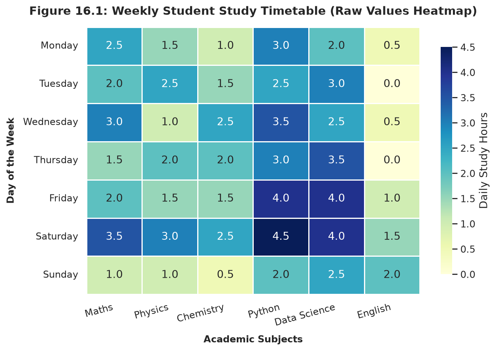
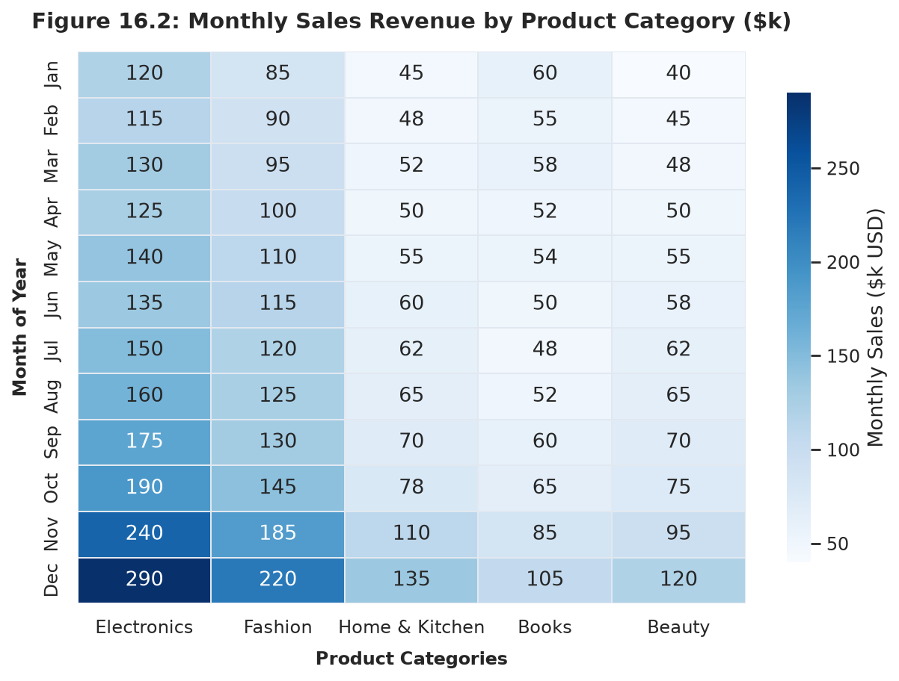
Neeche diye gaye code me hum ek synthetic weekly study hours matrix create karte hain aur sns.heatmap() se visualize karte hain:
import seaborn as sns
import matplotlib.pyplot as plt
import pandas as pd
import numpy as np
# 1. Define days and subjects
days = ["Mon", "Tue", "Wed", "Thu", "Fri", "Sat", "Sun"]
subjects = ["Maths", "Physics", "Chemistry", "Python", "Data Science", "English"]
# 2. Daily study hours matrix (7 days x 6 subjects)
study_matrix = [
[2.5, 1.5, 1.0, 3.0, 2.0, 0.5],
[2.0, 2.5, 1.5, 2.5, 3.0, 0.0],
[3.0, 1.0, 2.5, 3.5, 2.5, 0.5],
[1.5, 2.0, 2.0, 3.0, 3.5, 0.0],
[2.0, 1.5, 1.5, 4.0, 4.0, 1.0],
[3.5, 3.0, 2.5, 4.5, 4.0, 1.5],
[1.0, 1.0, 0.5, 2.0, 2.5, 2.0]
]
df_study = pd.DataFrame(study_matrix, index=days, columns=subjects)
# 3. Render heatmap with cell annotations
plt.figure(figsize=(8, 5))
sns.heatmap(df_study, annot=True, fmt=".1f", cmap="YlGnBu", linewidths=1, linecolor="white")
plt.title("Student Weekly Study Timetable (Hours Spent)")
plt.xlabel("Subjects")
plt.ylabel("Day of Week")
plt.show()Is second example me hum e-commerce department sales ($k) ko pivot-style matrix me render karte hain:
import seaborn as sns
import matplotlib.pyplot as plt
import pandas as pd
# Load monthly sales dataset
df_sales = pd.read_csv("scratch/seaborn_topic16_data/monthly_category_sales.csv", index_col=0)
plt.figure(figsize=(8.5, 5.5))
sns.heatmap(df_sales, annot=True, fmt="d", cmap="Blues", linewidths=0.5)
plt.title("Departmental Sales Revenue Across 12 Months ($k)")
plt.ylabel("Month")
plt.xlabel("Product Category")
plt.show()Data science me jab hum do ya do se zyada continuous numerical variables ke beech relationship explore karte hain, toh hum Correlation calculate karte hain. Correlation hume batata hai ki do variables kis hadd tak ek dusre ke saath co-vary karte hain (yaani ek ke badalne par dusra kis direction aur magnitude me badalta hai).
Sabse widely used correlation metric Pearson Correlation Coefficient (r) hai. Iski value strictly -1.0 se lekar +1.0 ke beech hoti hai:
| Correlation Coefficient (r) | Strength & Direction | Mathematical Meaning | Real-Life Relatable Example |
|---|---|---|---|
| +0.80 to +1.00 | Strong Positive | Variable X badhta hai, toh Y bhi linearly badhta hai. | Study Hours vs Final Exam Marks |
| +0.30 to +0.70 | Moderate Positive | Positive trend hai lekin natural variance/noise maujood hai. | Advertising Budget vs Website Visits |
| -0.20 to +0.20 | Near-Zero / No Linear | Variables ke beech koi linear connection nahi hai. | Student Roll Number vs Exam Score |
| -0.30 to -0.70 | Moderate Negative | Variable X badhta hai, toh Y decrease hota hai. | Product Price vs Units Sold |
| -0.80 to -1.00 | Strong Negative | Variable X badhta hai, toh Y sharply inversely drop hota hai. | Vehicle Speed vs Time Remaining to Reach Destination |
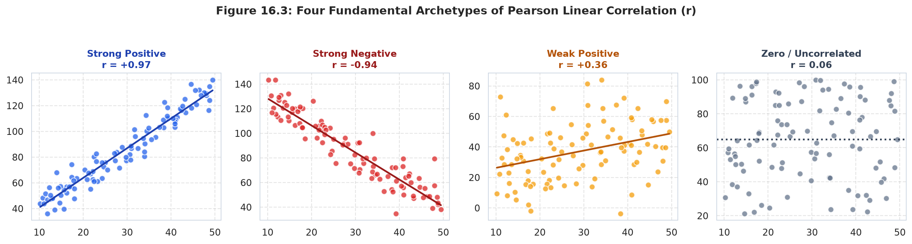
Explore how positive, negative, and uncorrelated patterns behave dynamically:
Pearson r sirf LINEAR relationships measure karta hai! Agar do variables ke beech ek perfect non-linear relationship ho (jaise quadratic curve y = x2 ya circle), toh Pearson r almost 0.0 calculate hoga! Isliye hamesha correlation number calculate karne ke sath scatter plot dekhna mandatory hai.
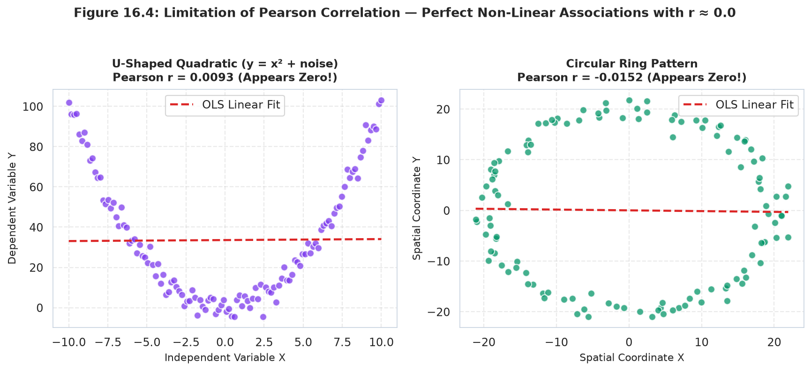
Python me scipy.stats.pearsonr() ya numpy.corrcoef() se direct coefficient verify kiya ja sakta hai:
import numpy as np
np.random.seed(42)
x = np.array([2.0, 3.5, 5.0, 6.5, 8.0, 9.5])
y_positive = np.array([52.0, 61.0, 70.0, 82.0, 89.0, 96.0]) # Study vs Marks
y_negative = np.array([120.0, 95.0, 75.0, 60.0, 42.0, 25.0]) # Price vs Units
r_pos = np.corrcoef(x, y_positive)[0, 1]
r_neg = np.corrcoef(x, y_negative)[0, 1]
print(f"Positive Correlation (Hours vs Marks): r = {r_pos:.4f}")
print(f"Negative Correlation (Price vs Units): r = {r_neg:.4f}")Demonstrating how a quadratic curve yields near-zero Pearson correlation:
import numpy as np
# Symmetric x values centered at 0
x_quad = np.linspace(-10, 10, 100)
y_quad = x_quad**2 # Perfect deterministic parabolic relationship
r_quad = np.corrcoef(x_quad, y_quad)[0, 1]
print(f"Parabolic relationship y = x^2 yields Pearson r = {r_quad:.4f} (Near Zero!)")Jab aapke DataFrame me multiple numerical columns hote hain (jaise 5 ya 8 features), toh har pair ke liye manually correlation calculate karne ki jagah Pandas ka powerful function df.corr() use kiya jata hai.
Yeh function ek complete Correlation Matrix return karta hai jisme sabhi variables ke pairwise correlation coefficients organized hote hain:
# Calculate pairwise Pearson correlation for numeric columns only
correlation_matrix = df.corr(numeric_only=True)
print(correlation_matrix)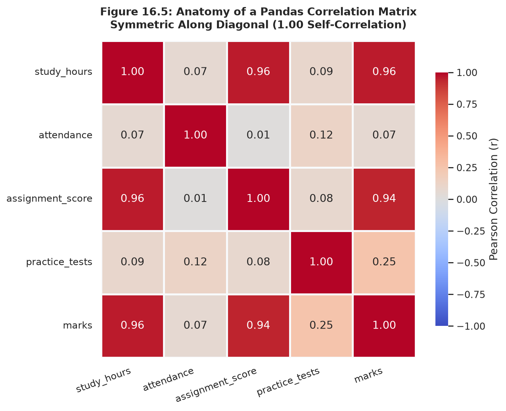
DataFrame me student_id, customer_id, ya order_id jaise arbitrary sequential numbers hote hain. Agar aap unhe df.corr() me pass kar doge, toh Pandas unhe mathematical measurements samajh kar spurious (fake) correlations calculate kar dega! Hamesha ID columns drop karein ya strictly valid analytical columns select karein.
Loading student dataset and calculating correlation matrix with verified statistics:
import pandas as pd
# Load reproducible student performance data (N=80)
df_student = pd.read_csv("scratch/seaborn_topic16_data/student_performance_dataset.csv")
# Compute Pearson correlation matrix
corr_matrix = df_student.corr(numeric_only=True)
print("--- Student Performance Correlation Matrix ---")
print(corr_matrix.round(3))Best practice in production: Explicitly select target numerical features to avoid arbitrary object columns or ID variables:
import pandas as pd
df = pd.read_csv("scratch/seaborn_topic16_data/ecommerce_sales_analytics.csv")
# Explicit analytical column selection
target_features = ["product_price", "discount_percent", "advertising_spend", "website_visits", "units_sold", "revenue"]
corr_ecom = df[target_features].corr()
print("--- E-Commerce Analytical Correlation Matrix ---")
print(corr_ecom.round(2))Pandas se correlation matrix calculate karne ke baad, visualization ka asli kaam Seaborn ka sns.heatmap() karta hai. Seaborn ek simple high-level API provide karta hai jo pure matrix ko high-contrast aesthetic tiles me transform kar deta hai:
import seaborn as sns
import matplotlib.pyplot as plt
# The quintessential Seaborn heatmap one-liner
sns.heatmap(correlation_matrix, annot=True, cmap="coolwarm", center=0)
plt.show()| Parameter | Type / Default | Technical Functionality | Visual & Practical Impact |
|---|---|---|---|
data |
2D DataFrame / ndarray | Input rectangular numeric dataset or correlation matrix. | Matrix ke dimensions ke hisaab se grid rows aur columns create karta hai. |
annot |
bool (Default: False) | Agar True ho, toh har grid cell ke andar numeric value print karta hai. |
Audience ko visual color ke saath exact numeric measurement provide karta hai. |
fmt |
str (Default: '.2g') | String formatting syntax for annotation text (e.g. ".2f", "d"). |
Prevents scientific notation; formats decimals cleanly (e.g. 0.85 instead of 0.84992). |
cmap |
Colormap name / object | Matplotlib colormap (e.g. "coolwarm", "vlag", "YlGnBu"). |
Data values ko colors me translate karta hai. Diverging vs sequential selection is crucial. |
vmin, vmax |
float (Default: None) | Colormap ke data limits anchor karta hai (e.g. vmin=-1.0, vmax=1.0). |
Ensures true symmetric normalization; isolates relative vs absolute scale distortion. |
center |
float (Default: None) | Colormap ka neutral midpoint anchor karta hai (usually center=0 for correlation). |
Forces neutral color (e.g. white/light grey) at zero, separating positive & negative. |
linewidths |
float (Default: 0) | Grid cells ke beech dividing border line ki width (thickness). | Cells ke beech clean separating border draw karke visual legibility boost karta hai. |
linecolor |
color (Default: 'white') | Dividing grid lines ka color (e.g. "white", "#CBD5E1"). |
Aesthetic polish aur distinct tile separation ensure karta hai. |
cbar |
bool (Default: True) | Whether to draw the colorbar legend on the right side. | Can be set to False for clean spark-heatmaps or composite subplots. |
square |
bool (Default: False) | If True, sets aspect ratio to 1:1 so each cell is a geometric square. |
Gives publication-grade geometric symmetry to correlation matrices. |
mask |
boolean array / DataFrame | Boolean array where cells with True are left blank (masked). |
Used to suppress redundant upper triangle of correlation matrices. |
xticklabels, yticklabels |
bool / list of str | Controls tick labeling and custom axis names. | Allows hiding clutter on 50+ feature matrices or rotating long feature names. |
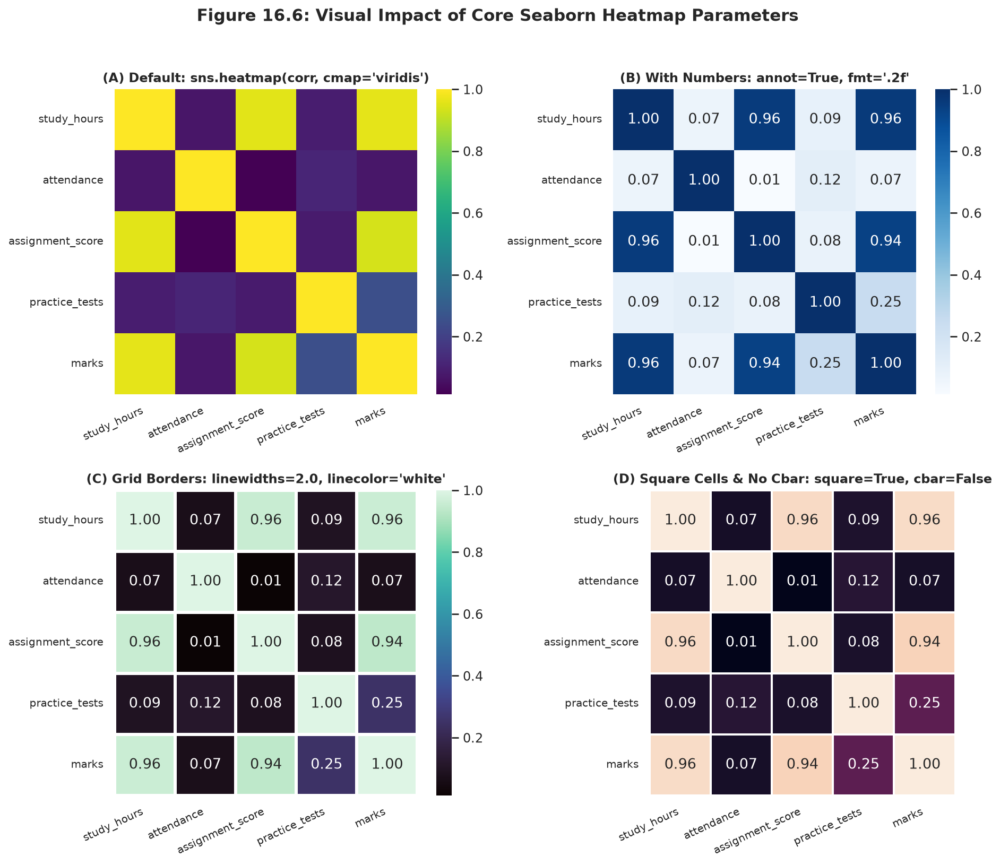
annot=True, (C) With grid borders linewidths=2.0, and (D) Square cells with colorbar hidden.Heatmap create karte waqt colormap ki choice data ke nature par depend karti hai:
"Blues", "YlGnBu", "viridis"): Raw values, non-negative counts, and magnitudes ke liye best hote hain jahan data 0 se positive infinity tak badhta hai."coolwarm", "vlag", "RdBu_r"): Correlation matrices ke liye strictly mandatory hain jahan zero (0.00) ek meaningful neutral midpoint hota hai aur values dono positive (+1) aur negative (-1) directions me diverge karti hain!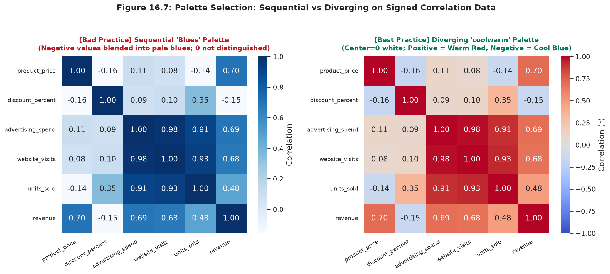
coolwarm palette clearly splits positive (warm red) and negative (cool blue) with neutral white at zero.import seaborn as sns
import matplotlib.pyplot as plt
import pandas as pd
df = pd.read_csv("scratch/seaborn_topic16_data/student_performance_dataset.csv")
corr = df.corr()
plt.figure(figsize=(7.5, 6))
sns.heatmap(
corr,
annot=True,
fmt=".2f",
cmap="coolwarm",
center=0,
vmin=-1,
vmax=1,
linewidths=1.5,
linecolor="white",
square=True,
cbar_kws={"label": "Pearson r"}
)
plt.title("Student Correlation Matrix (Square Cells & White Borders)")
plt.show()import seaborn as sns
import matplotlib.pyplot as plt
import pandas as pd
df = pd.read_csv("scratch/seaborn_topic16_data/ecommerce_sales_analytics.csv")
corr = df.corr()
plt.figure(figsize=(8.5, 6.5))
ax = sns.heatmap(corr, annot=True, fmt=".2f", cmap="vlag", center=0)
plt.xticks(rotation=30, ha="right", fontsize=9.5)
plt.yticks(rotation=0, fontsize=9.5)
plt.title("E-Commerce Metrics Heatmap with Rotated Axis Labels")
plt.tight_layout()
plt.show()Real-world machine learning aur statistical analytics me correlation heatmap generate karne ka ek standardized 8-Step Production Workflow hota hai:
| Step # | Workflow Stage | Key Operations & Code | Goal / Purpose |
|---|---|---|---|
| 1 | Load / Ingest Data | df = pd.read_csv("data.csv") |
Load tabular dataset into Pandas DataFrame. |
| 2 | Inspect Structure | df.info(), df.shape |
Verify rows, columns, data types, and initial schema. |
| 3 | Feature Selection | df_numeric = df[selected_numerical_cols] |
Filter only continuous/discrete numbers; drop identifiers. |
| 4 | Handle Missing Data | df_clean = df_numeric.dropna() |
Prevent biased correlations caused by missing records. |
| 5 | Calculate Matrix | corr = df_clean.corr(numeric_only=True) |
Compute Pearson pairwise correlation coefficients. |
| 6 | Build Mask (Optional) | mask = np.triu(np.ones_like(corr, dtype=bool)) |
Drop redundant duplicate upper triangle and self-diagonals. |
| 7 | Render Heatmap | sns.heatmap(corr, mask=mask, annot=True, center=0) |
Display high-contrast diverging visualization. |
| 8 | Interpret & Audit | Scan for collinearity (|r| > 0.85) and negative trade-offs | Synthesize actionable business and modeling insights. |
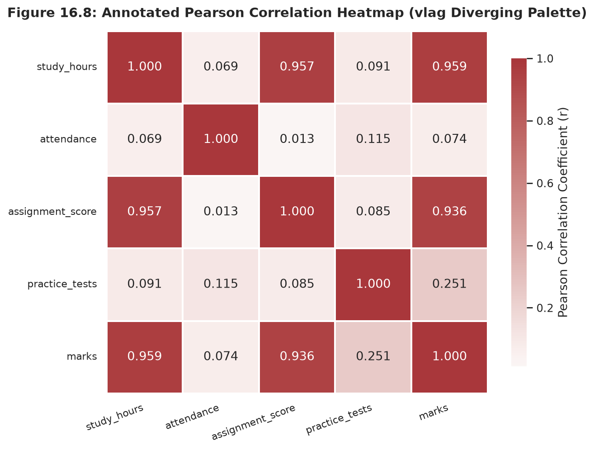
vlag palette centered at 0.0 with 3 decimal precision.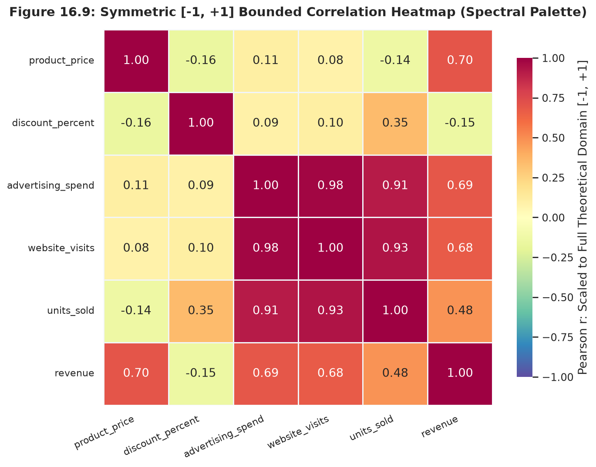
Spectral palette. Locking vmin=-1 and vmax=1 prevents visual over-exaggeration of weak correlations.Jaisa ki humne Section C me dekha, correlation matrix symmetric hoti hai. Diagonal ke upar wala hissa (upper triangle) aur diagonal ke niche wala hissa (lower triangle) identical information hold karte hain. Dono ko dikhana 50% screen space waste karta hai aur audience ko redundant data confuse karta hai.
NumPy ka np.triu() (triangle upper) function ek boolean mask banata hai jisme upper triangle cells True ho jati hain. Jab hum sns.heatmap(..., mask=mask) pass karte hain, toh Seaborn un cells ko render karna skip kar deta hai!
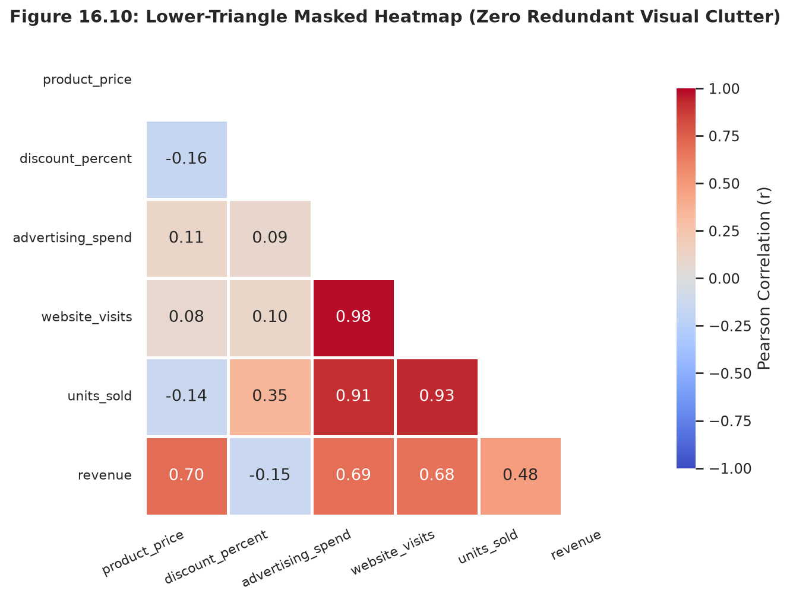
Yaad rahe ki mask lagane se underlying correlation numbers badalte nahi hain! Yeh sirf ek presentation choice hai jo chart ko clutter-free aur professional banati hai.
import numpy as np
import pandas as pd
import seaborn as sns
import matplotlib.pyplot as plt
df = pd.read_csv("scratch/seaborn_topic16_data/ecommerce_sales_analytics.csv")
corr = df.corr()
# Create boolean mask matching matrix shape
mask = np.triu(np.ones_like(corr, dtype=bool))
plt.figure(figsize=(8, 6))
sns.heatmap(corr, mask=mask, annot=True, fmt=".2f", cmap="coolwarm", center=0, vmin=-1, vmax=1)
plt.title("E-Commerce Metrics: Clean Lower Triangle Mask")
plt.show()import pandas as pd
import numpy as np
import seaborn as sns
import matplotlib.pyplot as plt
# 1. Load data
df = pd.read_csv("scratch/seaborn_topic16_data/student_performance_dataset.csv")
# 2. Select numerical columns explicitly
num_cols = ["study_hours", "attendance", "assignment_score", "practice_tests", "marks"]
df_clean = df[num_cols].dropna()
# 3. Calculate correlation matrix
corr_matrix = df_clean.corr()
# 4. Generate mask for upper triangle
mask = np.triu(np.ones_like(corr_matrix, dtype=bool))
# 5. Plot publication-grade heatmap
fig, ax = plt.subplots(figsize=(8, 6))
sns.heatmap(
corr_matrix,
mask=mask,
annot=True,
fmt=".2f",
cmap="vlag",
center=0,
vmin=-1.0,
vmax=1.0,
linewidths=1.2,
linecolor="white",
cbar_kws={"label": "Pearson Correlation (r)", "shrink": 0.8},
ax=ax
)
ax.set_title("Publication Standard: Student Performance Correlation Pipeline", pad=12, weight="bold")
plt.xticks(rotation=20, ha="right")
plt.yticks(rotation=0)
plt.show()Is real-life case study me hum 80 college students ke synthetic empirical dataset ko analyze karte hain. Is dataset me 5 key academic metrics hain: study_hours, attendance, assignment_score, practice_tests, aur marks.
Yeh dataset numpy.random.seed(42) ke saath scientifically generate kiya gaya synthetic dataset hai. Isme realistic random noise maujood hai taaki real-world classroom dynamics accurately mirror ho sakein.
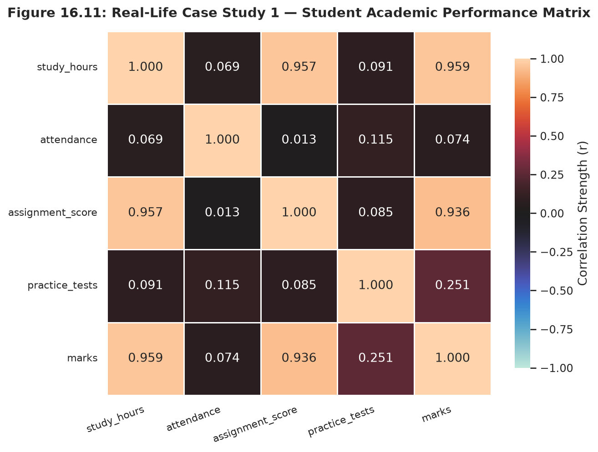
icefire diverging colormap.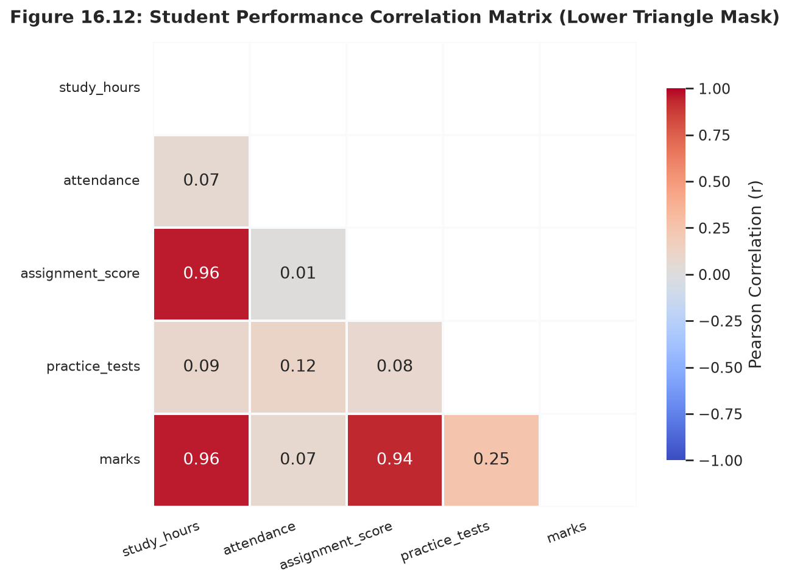
Kya 99% attendance hone se student automatically top karega? Bilkul nahi! Correlation data prove karta hai ki class me physically present rehna zaroori ho sakta hai, lekin sirf attendance se exam score guarantee nahi hota jab tak student daily active self-study aur assignments complete na kare. Mere presence is not equal to cognitive comprehension!
import pandas as pd
import seaborn as sns
import matplotlib.pyplot as plt
# 1. Load student performance data
df_student = pd.read_csv("scratch/seaborn_topic16_data/student_performance_dataset.csv")
# 2. Inspect shape and head
print("Dataset Shape:", df_student.shape)
print(df_student.head())
# 3. Compute correlation
corr_student = df_student.corr()
# 4. Render annotated heatmap
plt.figure(figsize=(8, 6))
sns.heatmap(corr_student, annot=True, fmt=".3f", cmap="icefire", center=0, vmin=-1, vmax=1)
plt.title("Case Study 1: Student Performance Full Matrix")
plt.show()import pandas as pd
import numpy as np
import seaborn as sns
import matplotlib.pyplot as plt
df_student = pd.read_csv("scratch/seaborn_topic16_data/student_performance_dataset.csv")
corr_student = df_student.corr()
# Mask upper triangle
mask = np.triu(np.ones_like(corr_student, dtype=bool))
plt.figure(figsize=(7.5, 5.8))
sns.heatmap(
corr_student,
mask=mask,
annot=True,
fmt=".2f",
cmap="coolwarm",
center=0,
vmin=-1,
vmax=1,
linewidths=1.5,
linecolor="#F8FAFC"
)
plt.title("Case Study 1: Academic Metrics (Publication Mask)")
plt.show()Modern digital retail platforms (Amazon, Flipkart, Shopify) rozana hazaron transactions record karte hain. Is case study me hum 100 commercial product cohorts ka empirical marketing aur sales dataset analyze karte hain:
product_price: Retail catalog price ($15 to $180).discount_percent: Promotional discount percentage (0% to 45%).advertising_spend: Paid search & social campaign expenditure ($200 to $4,800).website_visits: Total unique product page visitor sessions (Traffic volume).units_sold: Total completed checkout orders.revenue: Net gross revenue generated ($ USD).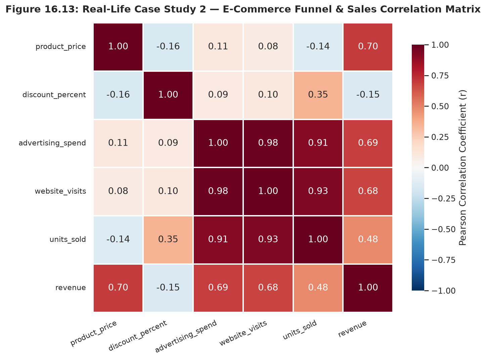
RdBu_r diverging colormap. Notice the intense positive cluster between advertising, visits, and units sold.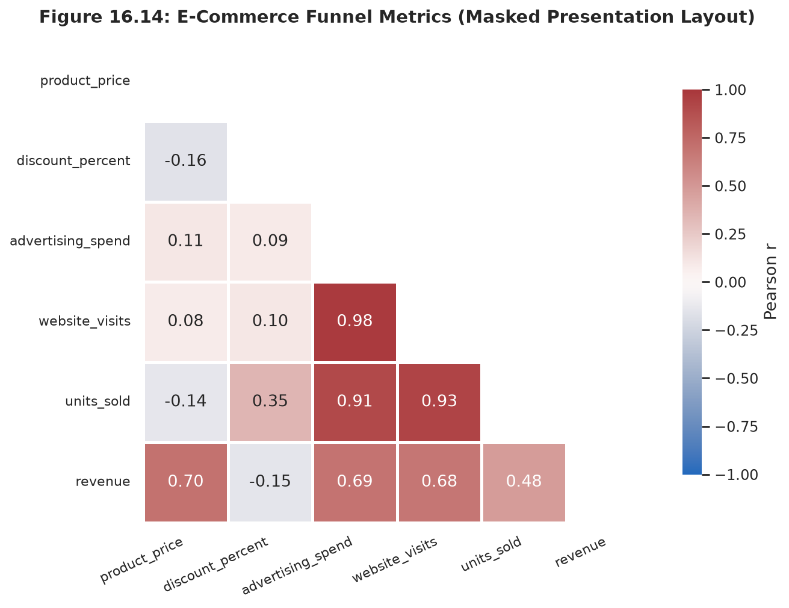
vlag palette. Clean numeric readouts expose both positive marketing leverage and negative price elasticities.Advertising vs Website Visits (r = +0.9798): Near-perfect correlation! Paid marketing traffic generation ka primary engine hai (Mean visits: 4,817).
Website Visits vs Units Sold (r = +0.9306): Visitors seamlessly convert into buyers, validating that traffic quality is high-intent.
Product Price vs Units Sold (r = -0.1399): Negative correlation! Higher price decreases unit demand — classic economic price elasticity.
Discount vs Revenue (r = -0.1473): Deep discounting unit sales boost karta hai (+0.3457), lekin net dollar revenue par slight negative impact daalta hai!
Ek amateur analyst keh sakta hai: "Discount badhao kyunki units sold badhte hain!" Lekin correlation heatmap expose karta hai ki discount badhane se net revenue (r = -0.1473) shrink ho sakti hai. Data analytics me correlation hamesha multi-variable tradeoffs ke context me dekhi jati hai.
import pandas as pd
import seaborn as sns
import matplotlib.pyplot as plt
df_ecom = pd.read_csv("scratch/seaborn_topic16_data/ecommerce_sales_analytics.csv")
corr_ecom = df_ecom.corr()
plt.figure(figsize=(8.5, 6.5))
sns.heatmap(corr_ecom, annot=True, fmt=".2f", cmap="RdBu_r", center=0, vmin=-1, vmax=1)
plt.title("Case Study 2: E-Commerce Funnel & Sales Correlation Matrix")
plt.xticks(rotation=25, ha="right")
plt.show()import pandas as pd
import numpy as np
import seaborn as sns
import matplotlib.pyplot as plt
df_ecom = pd.read_csv("scratch/seaborn_topic16_data/ecommerce_sales_analytics.csv")
corr_ecom = df_ecom.corr()
mask = np.triu(np.ones_like(corr_ecom, dtype=bool))
plt.figure(figsize=(8, 6.2))
sns.heatmap(
corr_ecom,
mask=mask,
annot=True,
fmt=".2f",
cmap="vlag",
center=0,
vmin=-1,
vmax=1,
linewidths=1.2,
linecolor="white"
)
plt.title("Case Study 2: E-Commerce Funnel (Masked Presentation)")
plt.xticks(rotation=25, ha="right")
plt.show()Site Reliability Engineers (SRE) aur DevOps teams production microservices ki health monitor karne ke liye continuous telemetry log karte hain. Is dataset me 120 hourly snapshots analyze kiye gaye hain:
request_count: API requests arriving per minute (200 to 3,200 req/min).response_time_ms: End-to-end 95th percentile latency (milliseconds).cpu_usage_percent: Server cluster CPU utilization percentage (15% to 98.5%).memory_usage_mb: RAM footprint in megabytes.error_count: HTTP 5xx internal server errors per minute.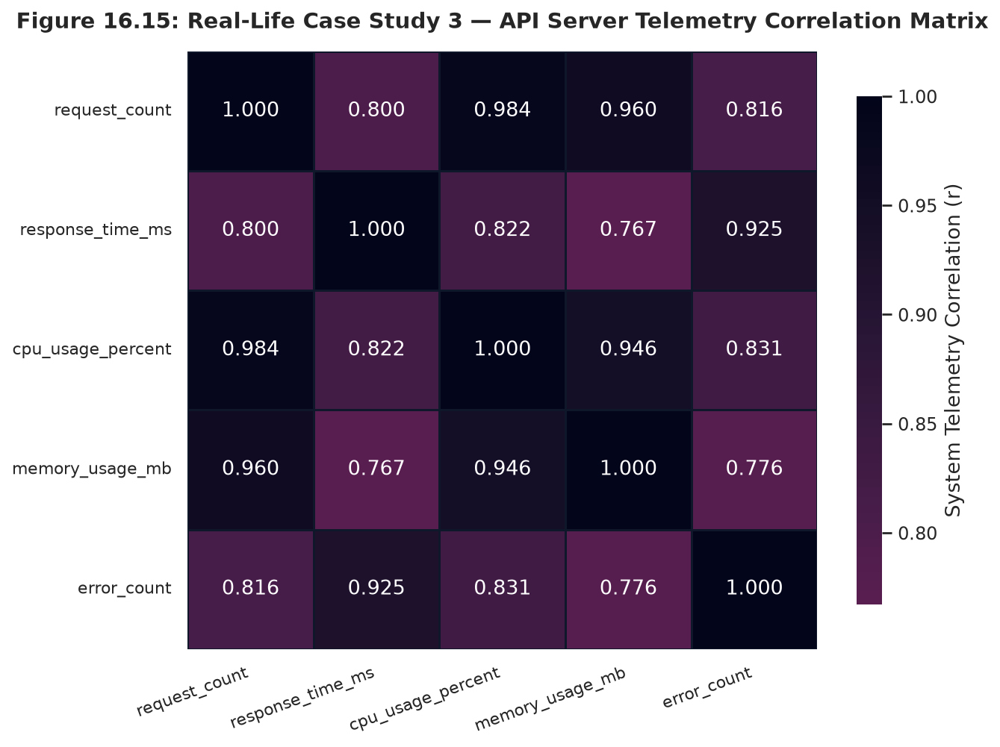
rocket_r colormap. Dense high-correlation nodes highlight cascading failure pathways under server stress.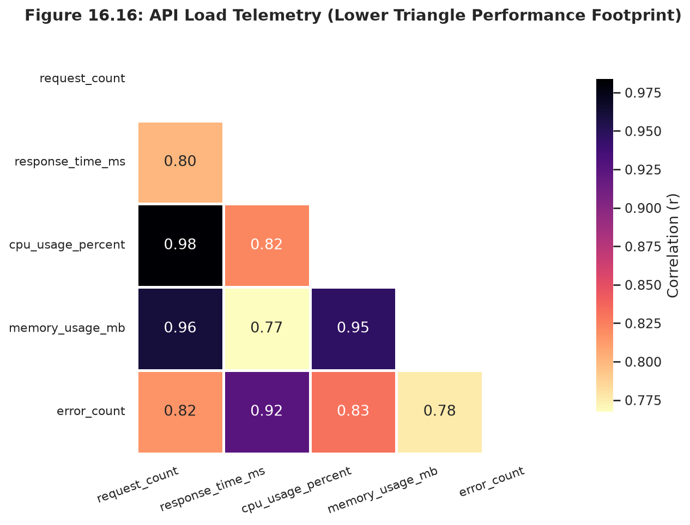
magma_r palette.Yeh synthetic simulation server dynamics ke standard queuing theory models par based hai. Real production systems me garbage collection pauses, network jitter, aur database lock contention additional multi-tier non-linearities introduce karte hain.
import pandas as pd
import seaborn as sns
import matplotlib.pyplot as plt
df_api = pd.read_csv("scratch/seaborn_topic16_data/api_system_telemetry.csv")
corr_api = df_api.corr()
plt.figure(figsize=(8.5, 6.2))
sns.heatmap(corr_api, annot=True, fmt=".3f", cmap="rocket_r", center=0.5, linewidths=1)
plt.title("Case Study 3: API Telemetry Performance Footprint")
plt.xticks(rotation=20, ha="right")
plt.show()import pandas as pd
import numpy as np
import seaborn as sns
import matplotlib.pyplot as plt
df_api = pd.read_csv("scratch/seaborn_topic16_data/api_system_telemetry.csv")
corr = df_api.corr()
mask = np.triu(np.ones_like(corr, dtype=bool))
plt.figure(figsize=(8, 6))
sns.heatmap(corr, mask=mask, annot=True, fmt=".2f", cmap="magma_r", linewidths=1.2, linecolor="white")
plt.title("Case Study 3: SRE Load vs Latency Risk Matrix")
plt.xticks(rotation=20, ha="right")
plt.show()Ek bahut bada misconception jo beginners ke beech rehta hai wo yeh hai ki "Heatmap ka matlab sirf correlation hota hai". This is completely false!
Heatmap sirf ek visual container hai jo kisi bhi 2D numerical grid ko colors me display karta hai. Yeh tab correlation represent karta hai jab aap df.corr() feed karte hain. Agar aap sales dollars, customer traffic counts, ya student exam marks feed karenge, toh yeh un raw values ka color-map banayega!
Pandas ke pivot_table() se hum raw tabular data ko 2D matrix me reshape karte hain aur seasonal demand patterns scan karte hain:
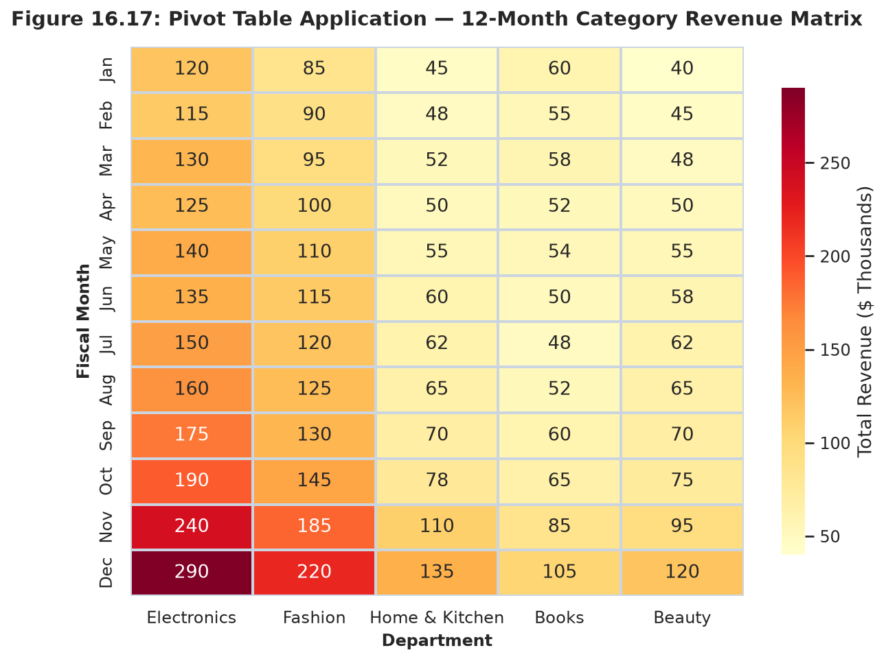
YlOrRd colormap. Q4 holiday sales explosion is immediately apparent across all departments.Raw academic grades ka matrix jisme passing threshold (70%) ko color center anchor kiya gaya hai:
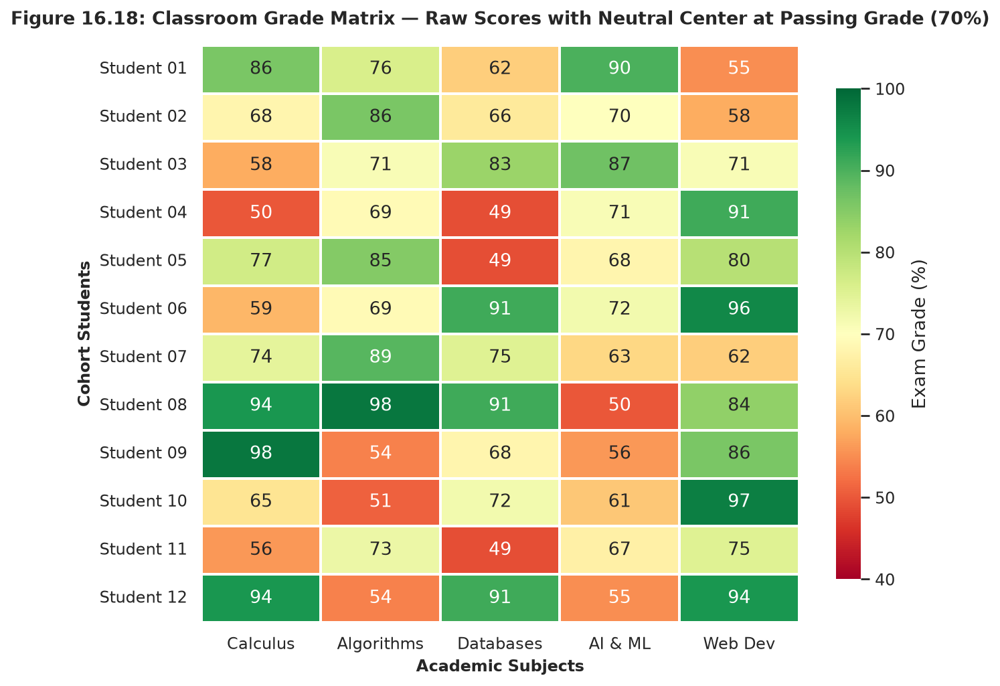
RdYlGn diverging palette. Red cells instantly flag students needing remedial intervention!Server traffic aur retail websites ke liye hourly clickstream pattern visualize karna:
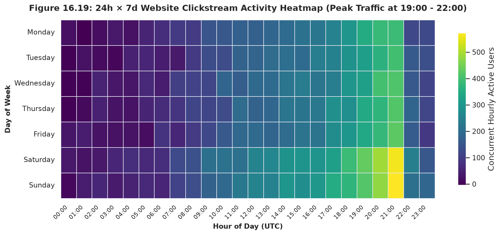
import pandas as pd
import seaborn as sns
import matplotlib.pyplot as plt
# Load monthly sales raw values
df_sales = pd.read_csv("scratch/seaborn_topic16_data/monthly_category_sales.csv", index_col=0)
plt.figure(figsize=(9, 6.2))
sns.heatmap(df_sales, annot=True, fmt="d", cmap="YlOrRd", linewidths=1.0, linecolor="#CBD5E1")
plt.title("Application 1: Monthly Department Revenue ($k)")
plt.xlabel("Product Category")
plt.ylabel("Month")
plt.show()import pandas as pd
import seaborn as sns
import matplotlib.pyplot as plt
df_traffic = pd.read_csv("scratch/seaborn_topic16_data/weekly_hourly_traffic.csv", index_col=0)
plt.figure(figsize=(12, 4.8))
sns.heatmap(df_traffic, cmap="viridis", linewidths=0.2, cbar_kws={"label": "Concurrent Active Users"})
plt.title("Application 3: 24h x 7d Website Traffic Activity Heatmap")
plt.xlabel("Hour of Day (UTC)")
plt.ylabel("Day of Week")
plt.xticks(rotation=45, ha="right", fontsize=8.5)
plt.tight_layout()
plt.show()Data visualization me graphic design sirf sundarta ke liye nahi hota — balki data ka meaning aur cognitive comprehension preserve karne ke liye hota hai. Ek poorly designed heatmap reader ko confuse karta hai, jabki ek well-crafted graphic instant clarity deliver karta hai.
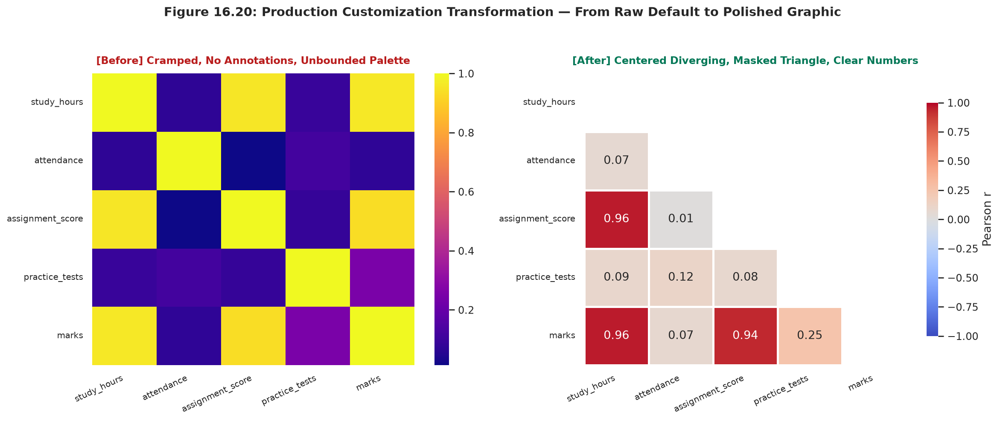
Correlation matrices ke liye hamesha center=0 aur symmetric bounds vmin=-1.0, vmax=1.0 lock karein. Aisa na karne par Seaborn relative min/max ke hisaab se scale stretch kar dega, jisse +0.30 ka weak correlation bhi dark red dikhai padne lagega!
Pass linewidths=1.0 to 1.5 with linecolor="white" (ya linecolor="#CBD5E1"). Yeh cells ke beech ek crisp separation grid create karta hai jisse numbers blend nahi hote.
Float values ke liye hamesha fmt=".2f" use karein. Raw float values pass karne par Python 12 decimal places ya scientific notation (e.g. 4.8e-01) print kar deta hai jo screen clutter kar deta hai.
Feature names lambe hone par X-axis par plt.xticks(rotation=30, ha="right") aur Y-axis par plt.yticks(rotation=0) apply karein taaki text bilkul horizontal aur easily readable rahe.
import pandas as pd
import numpy as np
import seaborn as sns
import matplotlib.pyplot as plt
df = pd.read_csv("scratch/seaborn_topic16_data/student_performance_dataset.csv")
corr = df.corr()
mask = np.triu(np.ones_like(corr, dtype=bool))
plt.figure(figsize=(8, 6), dpi=160)
sns.heatmap(
corr,
mask=mask,
annot=True,
fmt=".2f",
cmap="coolwarm",
center=0,
vmin=-1.0,
vmax=1.0,
linewidths=1.5,
linecolor="white",
square=True,
cbar_kws={"label": "Pearson Correlation (r)", "shrink": 0.8}
)
plt.title("Production Grade: Student Academic Correlation Matrix", pad=14, weight="bold")
plt.xticks(rotation=25, ha="right")
plt.yticks(rotation=0)
plt.tight_layout()
plt.show()import numpy as np
import pandas as pd
import seaborn as sns
import matplotlib.pyplot as plt
# Simulate 12-feature matrix
np.random.seed(42)
cols = [f"Feature_{i+1:02d}" for i in range(12)]
data_12 = np.random.randn(100, 12)
df_12 = pd.DataFrame(data_12, columns=cols)
corr_12 = df_12.corr()
# For 10+ columns, reduce annot font size or omit text annotations
plt.figure(figsize=(10, 8))
sns.heatmap(
corr_12,
annot=True,
fmt=".1f", # Compact 1-decimal precision
annot_kws={"size": 8}, # Smaller font size for crowded cells
cmap="vlag",
center=0,
vmin=-1,
vmax=1,
linewidths=0.5
)
plt.title("Compact Customization for 12-Feature Correlation Matrix")
plt.xticks(rotation=45, ha="right", fontsize=9)
plt.yticks(rotation=0, fontsize=9)
plt.tight_layout()
plt.show()Data science ka sabse sacred aur critical principle hai: Correlation describes association, NEVER causation!
Sirf isliye ki do variables X aur Y ek saath increase ya decrease ho rahe hain, iska yeh matlab bilkul nahi hai ki X ki wajah se Y badal raha hai (ya Y ki wajah se X).
Ek famous empirical anomaly: "Ice cream sales aur drowning deaths ke beech high positive correlation hoti hai (r = +0.88)!" Kya ice cream khane se log doobte hain? Bilkul nahi! Real driver ek hidden confounding variable hai: Summer Heat. Garmi me log ice cream bhi zyada khate hain aur swimming ke liye beaches/pools par bhi zyada jaate hain!
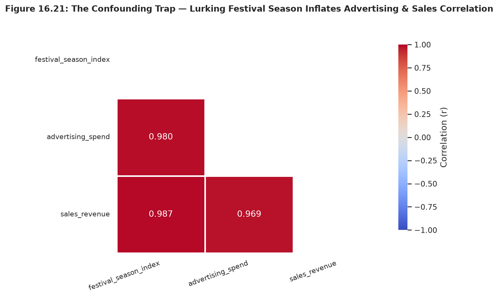
festival_season_index (r = +0.980 and r = +0.987)!import numpy as np
# 20 clean data points with low baseline correlation
np.random.seed(42)
x = np.random.uniform(10, 30, 20)
y = np.random.uniform(10, 30, 20)
r_clean = np.corrcoef(x, y)[0, 1]
# Inject a single massive outlier point (150, 150)
x_corrupted = np.append(x, [150.0])
y_corrupted = np.append(y, [150.0])
r_corrupted = np.corrcoef(x_corrupted, y_corrupted)[0, 1]
print(f"Clean Data Correlation: r = {r_clean:.4f} (Near Zero)")
print(f"Corrupted with ONE Outlier: r = {r_corrupted:.4f} (Artificially Huge!)")import pandas as pd
import seaborn as sns
import matplotlib.pyplot as plt
df_conf = pd.read_csv("scratch/seaborn_topic16_data/confounding_festival_sales.csv")
corr_conf = df_conf.corr()
plt.figure(figsize=(7, 5.5))
sns.heatmap(corr_conf, annot=True, fmt=".3f", cmap="coolwarm", center=0, vmin=-1, vmax=1)
plt.title("Confounding Variable: Festival Season Drives Ad Spend & Sales")
plt.show()Heatmaps aur correlation matrices create karte waqt industry developers frequently in 12 critical traps me phas jate hain. Neeche har pitfall ka symptom, root cause, aur production fix detailed hai:
| # | Pitfall / Mistake | Underlying Root Cause | Production-Grade Fix |
|---|---|---|---|
| 1 | Including ID columns in correlation matrix | customer_id ya roll_no integer type hote hain, so df.corr() unhe measure kar leta hai. |
Explicitly drop IDs: df.drop(columns=['id']).corr() or select target analytical features. |
| 2 | Arbitrary categorical encodings | Encoding non-ordinal categories (e.g. City: Delhi=1, Mumbai=2, Bangalore=3) creates fake numerical order. | Only correlate truly numeric continuous/discrete metrics, or ordinal ranks. |
| 3 | Treating correlation as causation | Assuming high r proves feature A causes feature B in business strategy. | Conduct A/B testing or randomized controlled trials before concluding causality. |
| 4 | Using sequential palette for signed correlation | Sequential palettes (Blues, viridis) lack a neutral center, so negative correlations blend into pale shades. | Strictly use diverging palettes: cmap="coolwarm" or "vlag" with center=0. |
| 5 | Forgetting fmt parameter |
Default fmt=".2g" prints scientific notation (e.g. 3.5e-01) on floats. |
Always specify fmt=".2f" for decimals or fmt="d" for integer counts. |
| 6 | Overcrowded text annotations | Printing text in a 30 × 30 matrix causes overlapping unreadable black boxes. | Set annot=False for large matrices or use annot_kws={"size": 7}. |
| 7 | Misinterpreting the diagonal 1.00 | Novices treat self-correlation as an important discovery. | Mask the upper triangle or remember that diagonal is mathematically 1.0 by definition. |
| 8 | Cognitive clutter from duplicated mirror plots | Upper triangle is an exact duplicate of lower triangle. | Apply mask=np.triu(np.ones_like(corr, dtype=bool)) for client reports. |
| 9 | Silently dropping rows due to missing values | Columns with NaNs cause pairwise drops without analyst awareness. | Audit df.isnull().sum() and impute or drop missing values explicitly before correlation. |
| 10 | Assuming non-linear relationships have high Pearson r | Quadratic or cyclical patterns yield near-zero Pearson correlation. | Always cross-check with bivariate scatter plots (sns.pairplot or sns.jointplot). |
| 11 | Comparing heatmaps with inconsistent color scales | Matrix A scales [-0.2, 0.4] while Matrix B scales [-0.8, 0.8], misleading visual comparison. | Lock both heatmaps to vmin=-1.0, vmax=1.0 for fair comparison. |
| 12 | Misreading raw-value heatmap as correlation | Feeding raw sales counts into heatmap and interpreting colors as correlation coefficients. | Verify input: sns.heatmap(df.corr()) is correlation; sns.heatmap(df) is raw values! |
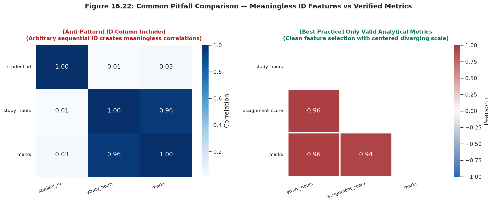
# BAD CODE: Raw dataframe with IDs & bad palette
import seaborn as sns
import matplotlib.pyplot as plt
# Includes student_id, unformatted annot, bad cmap
sns.heatmap(df.corr(), annot=True, cmap="Blues")
plt.show()Flaws: Meaningless ID correlations, negative values hidden, no bounds lock, unreadable clutter.
# PRODUCTION FIX: Clean, bounded, masked
import numpy as np
import seaborn as sns
import matplotlib.pyplot as plt
num_cols = ["study_hours", "assignment_score", "marks"]
corr = df[num_cols].corr()
mask = np.triu(np.ones_like(corr, dtype=bool))
sns.heatmap(
corr,
mask=mask,
annot=True,
fmt=".2f",
cmap="vlag",
center=0,
vmin=-1,
vmax=1,
linewidths=1.2,
linecolor="white"
)
plt.show()import pandas as pd
# Load dataset containing student_id
df = pd.read_csv("scratch/seaborn_topic16_data/student_performance_dataset.csv")
df["student_id"] = range(101, 101 + len(df))
# WRONG: df.corr() includes student_id!
# RIGHT: Filter explicitly
valid_features = ["study_hours", "attendance", "assignment_score", "practice_tests", "marks"]
clean_corr = df[valid_features].corr()
print("Safely filtered correlation matrix shape:", clean_corr.shape)import pandas as pd
import numpy as np
# Create tiny dataset with missing values
df_nan = pd.DataFrame({
"A": [1.0, 2.0, np.nan, 4.0, 5.0],
"B": [2.0, 4.0, 6.0, np.nan, 10.0],
"C": [5.0, 4.0, 3.0, 2.0, 1.0]
})
# Pandas uses pairwise complete observations
print("Pairwise correlation ignoring NaNs:")
print(df_nan.corr().round(2))Apni learning ko test karne ke liye ye 6 practical mini challenges solve karein. Har challenge ke saath detailed hint di gayi hai, aur collapsible accordion me verified solution script provided hai:
Objective: scratch/seaborn_topic16_data/student_performance_dataset.csv load karein, sirf continuous numerical features select karein, aur Pearson correlation matrix compute karke 3 decimal places tak round karein.
Hint: Use df[['study_hours', 'attendance', 'assignment_score', 'practice_tests', 'marks']].corr().round(3).
import pandas as pd
df = pd.read_csv("scratch/seaborn_topic16_data/student_performance_dataset.csv")
num_cols = ["study_hours", "attendance", "assignment_score", "practice_tests", "marks"]
corr_res = df[num_cols].corr().round(3)
print(corr_res)Objective: Student correlation matrix ko sns.heatmap() se plot karein jisme numeric values display hon (annot=True), decimal format 2 decimal places ho (fmt=".2f"), aur colormap "coolwarm" ho.
Hint: Pass annot=True, fmt=".2f", cmap="coolwarm" to sns.heatmap().
import seaborn as sns
import matplotlib.pyplot as plt
import pandas as pd
df = pd.read_csv("scratch/seaborn_topic16_data/student_performance_dataset.csv")
corr = df.corr()
plt.figure(figsize=(7, 5.5))
sns.heatmap(corr, annot=True, fmt=".2f", cmap="coolwarm")
plt.title("Challenge 2: Annotated Coolwarm Heatmap")
plt.show()Objective: Challenge 2 ke plot ko enhance karein by setting center=0, vmin=-1.0, aur vmax=1.0 taaki positive aur negative values accurately neutral zero midpoint ke around diverge hon.
Hint: Add parameters center=0, vmin=-1.0, vmax=1.0.
import seaborn as sns
import matplotlib.pyplot as plt
import pandas as pd
df = pd.read_csv("scratch/seaborn_topic16_data/ecommerce_sales_analytics.csv")
corr = df.corr()
plt.figure(figsize=(8, 6))
sns.heatmap(corr, annot=True, fmt=".2f", cmap="coolwarm", center=0, vmin=-1.0, vmax=1.0)
plt.title("Challenge 3: Centered [-1, +1] Bounded Heatmap")
plt.show()Objective: NumPy ka np.triu() use karke boolean mask create karein aur correlation matrix ka duplicate upper triangle drop karein with crisp white borders.
Hint: mask = np.triu(np.ones_like(corr, dtype=bool)) aur pass mask=mask, linewidths=1.5, linecolor="white".
import numpy as np
import seaborn as sns
import matplotlib.pyplot as plt
import pandas as pd
df = pd.read_csv("scratch/seaborn_topic16_data/student_performance_dataset.csv")
corr = df.corr()
mask = np.triu(np.ones_like(corr, dtype=bool))
plt.figure(figsize=(7.5, 6))
sns.heatmap(
corr,
mask=mask,
annot=True,
fmt=".2f",
cmap="vlag",
center=0,
vmin=-1,
vmax=1,
linewidths=1.5,
linecolor="white",
square=True
)
plt.title("Challenge 4: Masked Lower Triangle Heatmap")
plt.show()Objective: Monthly category sales dataset ko load karein aur raw value heatmap render karein with integer formatting (fmt="d") and sequential "YlGnBu" palette.
Hint: This is a RAW values heatmap, so do NOT call .corr()! Pass raw DataFrame directly.
import seaborn as sns
import matplotlib.pyplot as plt
import pandas as pd
df_sales = pd.read_csv("scratch/seaborn_topic16_data/monthly_category_sales.csv", index_col=0)
plt.figure(figsize=(8.5, 6))
sns.heatmap(df_sales, annot=True, fmt="d", cmap="YlGnBu", linewidths=0.8)
plt.title("Challenge 5: Raw Values Monthly Sales Matrix ($k)")
plt.show()Scenario: E-commerce dataset me advertising_spend aur sales_revenue ke beech strong correlation (r > 0.96) paya gaya.
Analytical Deduction: Kya ad spend ko 10x badhane se revenue automatically 10x badh jayegi? Nahi! Kyunki festival season (Diwali, Christmas) ek confounding factor hai jo organic buyer demand aur ad budget dono ko simultaneously inflate karta hai. Off-season me aggressive ad spending se diminishing returns aur customer ad fatigue ho sakti hai, proving that statistical association is not causal proof.
Is concluding section me hum poor Topic 16 ke key takeaways, technical syntax reference, aur real-world production decision rules ko summarize karte hain.
| Analytical Dimension | Raw Value Heatmap | Correlation Matrix Heatmap |
|---|---|---|
| Underlying Input Data | Raw measurements (e.g. Sales $, hours, click counts). | Statistical coefficients from df.corr(). |
| Mathematical Range | Arbitrary non-negative values [0, ∞). | Strictly bounded domain [-1.00, +1.00]. |
| Recommended Colormap | Sequential ("YlGnBu", "Blues", "viridis"). |
Diverging ("coolwarm", "vlag", "RdBu_r"). |
| Neutral Midpoint | None, or baseline target (e.g. 70% passing score). | Strictly center=0.0 (white/neutral tone). |
| Matrix Symmetry | Usually asymmetric (e.g. 12 Months × 5 Categories). | Always square (M × M) and symmetric. |
| Triangular Masking | Never used (every cell is a unique observation). | Highly recommended to drop redundant upper triangle. |
| Core Analytical Goal | Detect peak magnitude hotspots across categories/time. | Detect collinearity, inverse trade-offs, and feature clusters. |
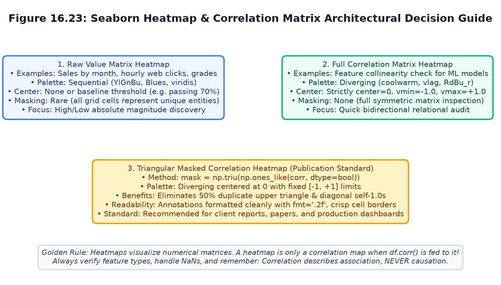
| Component | Recommended Production Value | Why It Matters |
|---|---|---|
sns.heatmap() |
Primary visual rendering engine | Translates 2D matrix data into color-encoded grid tiles. |
annot=True |
Enable numeric text annotations | Eliminates color ambiguity by displaying exact numbers inside cells. |
fmt=".2f" |
Two-decimal string formatting | Prevents scientific notation and keeps cells readable. |
cmap="coolwarm" |
Diverging color palette | Separates positive (warm) and negative (cool) correlations cleanly. |
center=0 |
Neutral zero midpoint anchor | Forces neutral tone at zero correlation for unambiguous interpretation. |
vmin=-1, vmax=1 |
Locked theoretical limits | Prevents relative color distortion across comparing datasets. |
mask=np.triu(...) |
Triangular upper mask | Drops duplicate upper half, cutting visual clutter by 50%. |
linewidths=1.2 |
Crisp cell grid borders | Separates adjoining colored tiles with high-contrast lines. |
df.corr()?df.isnull().sum()) before calculating correlation?"coolwarm", "vlag") with center=0?vmin=-1.0, vmax=1.0 for Pearson correlation?np.triu() to mask the redundant upper triangle for client reports?Aapne sns.heatmap() aur correlation matrices ko comprehensively master kar liya hai! Next topic me hum explore karenge Facet Grids & Multi-Plot Grid Layouts (Topic 17) — jisme aap seekhenge ki kaise sns.FacetGrid aur multi-dimensional categorical conditioning se complex datasets ko clean row-and-column subplots me partition kiya jata hai!